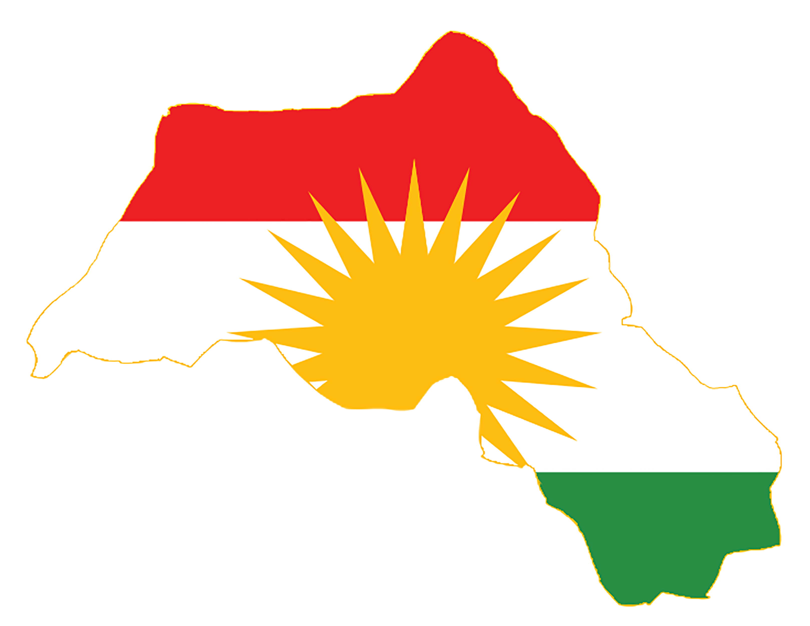

In this website, we will tell you about Kurdsitan, its history, population, its cities and more!

Introduction:
Iraqi Kurdistan or the Kurdistan Region is an
autonomous region of Iraq.
It borders Iran to the east, Turkey to the north, Syria to the west and the rest
of Iraq to the south. The regional capital is Erbil, also known as Hawler. The
region is officially governed by the
Population:
| City | Population |
| Hawler | 1,010,000 |
| Sulaymaniah | 898,000 |
| Duhok | 420000 |
| Kerkuk | 1.075.000 |
History:
The history of Kurdistan is complex and spans many
centuries. Kurdistan refers to a region in the Middle East that is historically
and culturally inhabited by the Kurdish people. The Kurds are an ethnic group
with their own language and distinct cultural identity. The region commonly
associated with Kurdistan is characterized by mountainous terrain and spans
parts of modern-day Turkey, Iran, Iraq, and Syria.
Key points in the history of Kurdistan include:
1. **Ancient History:** The Kurds have ancient roots, and their history can be
traced back to the ancient Medes, who inhabited the region around the 9th
century BCE. The Medes played a significant role in the downfall of the Assyrian
Empire.
2. **Islamic Period:** With the spread of Islam in the 7th century, the Kurds
became part of the Islamic world. Over the centuries, they played roles in
various Islamic empires, including the Seljuk Empire and the Ottoman Empire.
3. **Ottoman Empire:** Kurdistan was a part of the Ottoman Empire for several
centuries. However, the Kurds were subject to various forms of discrimination
and attempts to assimilate them into the larger Ottoman society.
4. **Post-World War I:** The end of World War I and the dissolution of the
Ottoman Empire led to the re-drawing of borders in the Middle East. The Treaty
of Sèvres (1920) and later the Treaty of Lausanne (1923) aimed to establish new
states, including an independent Kurdistan. However, these plans were not fully
realized.
5. **Creation of Iraq and Syria:** The modern states of Iraq and Syria were
established in the aftermath of World War I, and the Kurdish-inhabited areas
were divided among these states. The Kurds faced challenges, including
marginalization and suppression of their cultural and political rights.
6. **Iran:** The Kurdish population in Iran has also faced challenges, but there
hasn't been a significant push for an independent Kurdish state within Iran as
compared to other parts of Kurdistan.
7. **Kurdish Nationalism:** Throughout the 20th century, Kurdish nationalist
movements emerged, seeking autonomy or independence for the Kurdish people. The
Kurdistan Democratic Party (KDP) and the Patriotic Union of Kurdistan (PUK)
became prominent political entities in Iraqi Kurdistan.
8. **Gulf War and No-Fly Zone:** After the Gulf War in 1991, the United States
and its allies established a no-fly zone in northern Iraq, allowing the Kurds to
govern themselves to a certain extent. This autonomy was further solidified
after the overthrow of Saddam Hussein in 2003.
9. **Syrian Civil War:** The conflict in Syria has also had implications for the
Kurdish population, with the emergence of autonomous Kurdish regions in the
northeast, primarily led by the Syrian Democratic Forces (SDF).
Despite these developments, the dream of an independent Kurdistan remains
unfulfilled, and the Kurdish people continue to face challenges related to
political autonomy, cultural rights, and regional conflicts. The situation is
dynamic, and events in the region continue to shape the history and future of
Kurdistan.